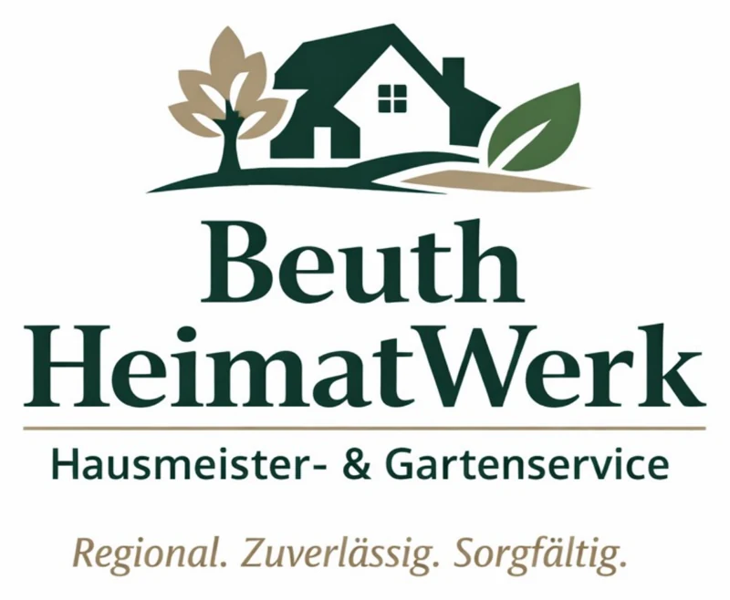

Wörth am Rhein · Südpfalz · Karlsruhe
Haus, Garten & Objekt.
Zuverlässig betreut.
Persönlicher Hausmeister- und Gartenservice für Privatkunden, Vermieter, Praxen und kleinere Gewerbeobjekte.

Leistungen
Ein Ansprechpartner für Ihre Immobilie
Von der laufenden Objektbetreuung bis zum einzelnen Auftrag: Leistungen werden passend zum tatsächlichen Bedarf abgestimmt.
Hausmeisterservice & Objektbetreuung
Kontrollgänge, Objektpflege, Ordnung, Sauberkeit und Koordination externer Dienstleister.
Mehr erfahren → 02Gartenpflege & Gartenservice
Hecken- und Strauchschnitt, Rasenpflege, Beete, Grünflächen und saisonale Gartenarbeiten.
Mehr erfahren → 03Gebäudereinigung
Treppenhäuser, Eingangsbereiche, Praxen und ausgewählte Außenflächen zuverlässig gepflegt.
Mehr erfahren → 04Möbel- & Montageservice
Abholung, Lieferung und sorgfältiger Aufbau freistehender Möbel sowie Kleinmontagen.
Mehr erfahren →Mit Sorgfalt vor Ort
Gepflegte Flächen. Klare Absprachen.
Vom einzelnen Garteneinsatz bis zur regelmäßigen Objektbetreuung: Wir stimmen die Arbeit auf Ihren Bedarf ab.
Illustrative Bildmotive, keine dokumentierten Kundenaufträge.Beuth HeimatWerk
Persönlich statt anonym.
Mein Name ist Peter Beuth. Mit Beuth HeimatWerk biete ich zuverlässige Unterstützung rund um Haus, Garten und Objekt. Mir sind klare Absprachen, sorgfältige Arbeit und ein ordentlicher Abschluss wichtig.
Ob Einzelauftrag oder regelmäßige Betreuung: Sie haben einen festen Ansprechpartner und eine Leistung, die zu Ihrem Objekt passt.
Einsatzgebiet
In der Südpfalz und Karlsruhe
Schwerpunktmäßig bin ich in Wörth am Rhein, Hagenbach, Berg und Scheibenhardt sowie in Karlsruhe und im näheren Umfeld im Einsatz. Weitere Orte nach Absprache.
Kontakt
Was können wir für Sie erledigen?
Schildern Sie kurz Ihr Anliegen. Für eine schnelle Einschätzung helfen Ort, gewünschte Leistung und – wenn vorhanden – ein paar Fotos.